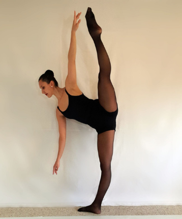
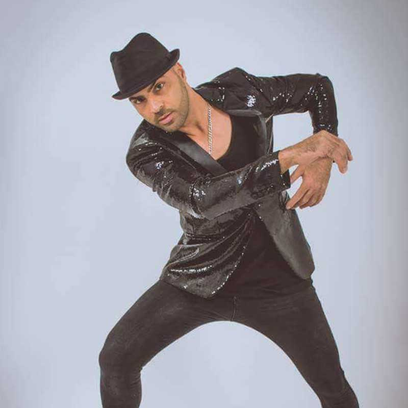
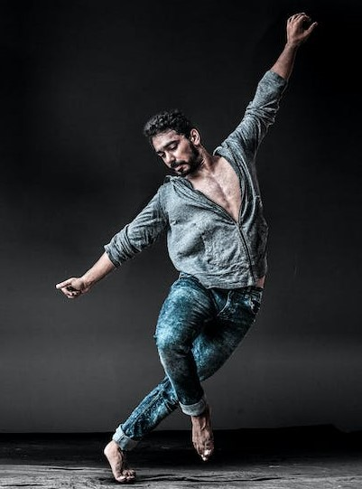
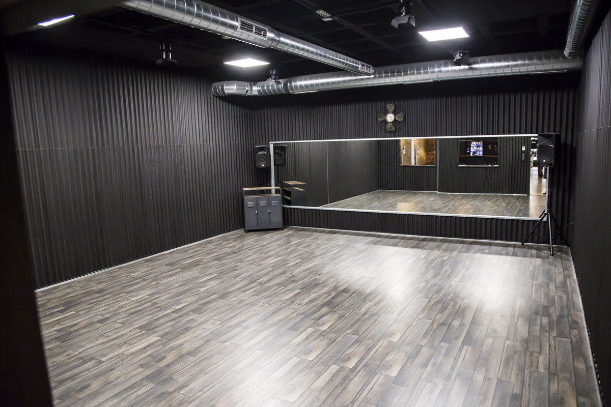
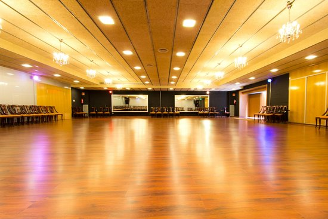
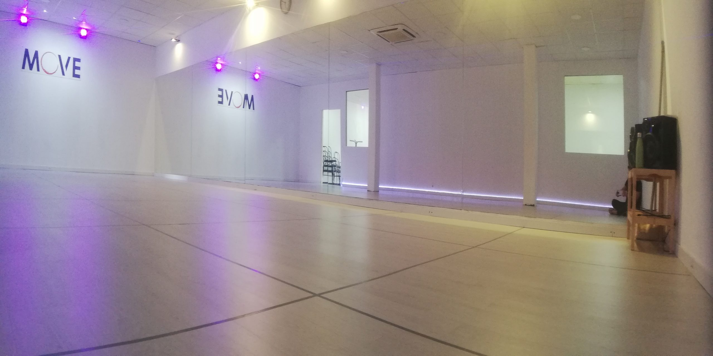
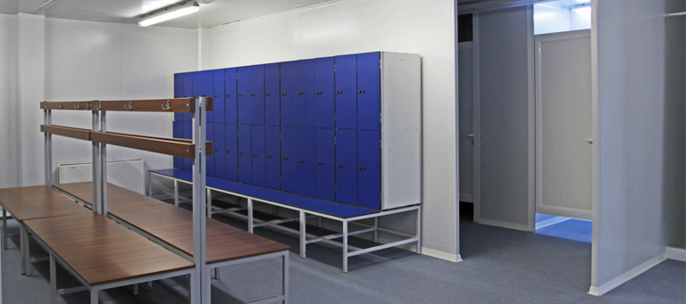

Mueve el esqueleto es una academia de baile con 10 años de historia. Nació a partir de la falta de oferta en Santiago de cursos de baile adaptados al público estudiante y trabajador, con poca disponibilidad y flexibilidad horaria, para que puedan gozar de una alternativa de ocio adaptada y divertida. Desde ese momento nos hemos posicionado como la mejor academia gallega en este sector, permitiendo a nuestro público aprender a bailar sin necesidad de seguir un horario estricto y un nivel de exigencia alto, pasándolo bien en el proceso. Nuestra máxima siempre ha sido escuchar a nuestros clientes porque nos debemos a ellos. Es por ello que desde el año pasado hemos habilitado la posibilidad de reservar nuestras aulas para uso privado, incrementando así nuevamente nuestro público objetivo.
Profesores

Andrea Suárez
Edad: 36 años
Especialidad: bailes clásicos y tradicionales
Andrea lleva siendo nuestra profesora de bailes clásicos y tradicionales desde que comenzamos a impartir clases hace 10 años. Combina sus más de 20 años de experiencia bailando de forma semiprofesional con su cada vez mayor habilidad para enseñar, siendo por lo tanto la persona ideal para iniciarte en el mundo del baile a través de los clásicos y tradicionales de España.

Felipe Martín
Edad: 43 años
Especialidad: bailes latinos
Tras más de dos décadas en el circuito de las orquestas, formando parte de grupos como el Combo Dominicano o la Orquesta Panorama, Felipe se incorpora a nuestra plantilla para transmitir su energía y buen humor a todos sus alumnos. Pocas personas pueden presumir de tener mayor conocimiento en los bailes latinos: desde la salsa y el merengue pasando por el tango o el chachachá.

Antón Loureiro
Edad: 31 años
Especialidad: baile contemporáneo
Antón viene de proclamarse campeón de España en baile contemporáneo por parejas, y en su tercer año en la academia tiene más ganas de nunca de compartir su expresionismo a través de movimientos. Si quieres llevar tus habilidades al siguiente nivel estás ante una oportunidad única.
Instalaciones
Aula A1
Capacidad: 15 personas
Tamaño: 20m2
Aula A2

Capacidad: 10 personas
Tamaño: 15m2
Aula A3

Capacidad: 25 personas
Tamaño: 40m2
Aula A4

Capacidad: 8 personas
Tamaño: 15m2
Vestuarios (masculino y femenino)

Capacidad: 40 personas
Equipados con duchas y taquillas con llave.
Almacén
Material para uso exclusivo de clientes y dentro de las instalaciones.
Incluye atrezzos, elementos deportivos y vestimentas para diferentes tipos de danza.